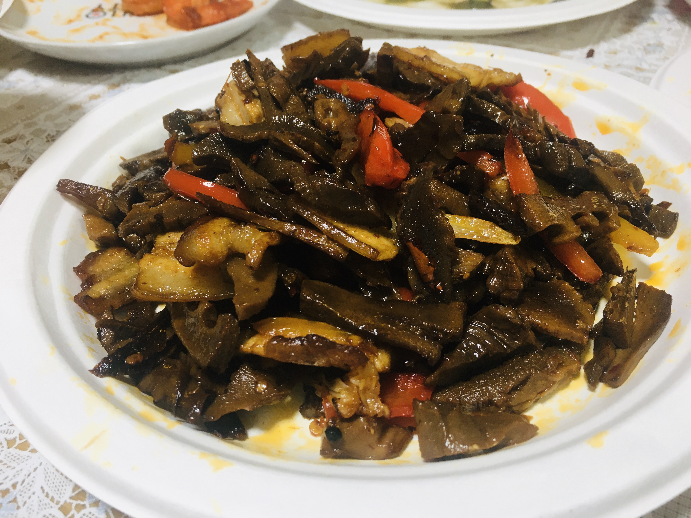
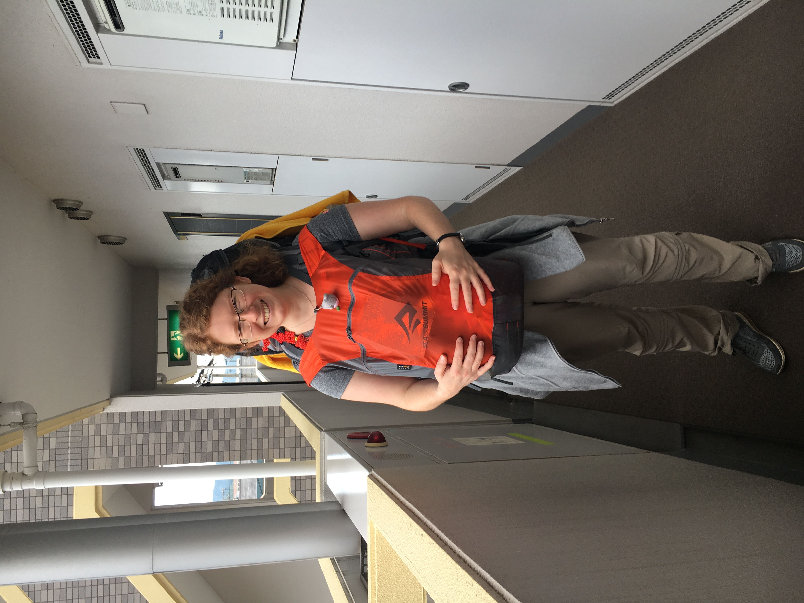

上一章
我这小家经常高朋满座。这章分享一下照片。
下面是2020年4月准备去于传道家，在我家准备的。
绿豆绿（即豌豆黄）。过筛是特别麻烦的事情，不过我把这最“灵魂”的工作交托给别人（我说话都很好听，目的为让人甘心情愿给我）。

完了喝杯咖啡庆祝
出发过去了

花花要做家乡的干笋。每做一部都打电话给老爸问。

吃饭了

甘笋焖肉，用高压锅做的。

2017年3月，我在东京认识，在NPO做兼职的Mikiti。

2018年5月，来自德国的前同事Sabina。

这是我们有次去吴的小岛旅行吃过的蛋糕和冰淇淋，当时大家都很喜欢。有次聚会前我就买了请大家吃，他们很惊喜。


这个冰淇淋用本地柠檬，蛋糕用本地橘子，都很好吃的。
这是另一次聚会，这个日式折纸我教过很多朋友做的。


这是学长毕业去北九州前，送他猫头鹰。


和mm们聚会

自己的作品

会运动的我当然还教人做练习

这是不合格的，大腿后侧肌肉（hamstring）太绷劲，跑步容易受伤的，要天天做这种拉伸。

2022年1月1日庆元旦，我买了paganini的半生芝士蛋糕作下午茶。

晚饭吃海鲜和牛烧烤（那段期间paypay买菜7折），饮我之前出买的葡萄酒。

花花是永远的洗碗公主。
又一次和教会朋友聚会
2020年3月疫情下聚会。日本一般很少这个鸡脆骨的，一般是鸡胸那段，我喜欢这个鸡腿的。我一般不加油直接下锅，让它自己出油，然后水分干了就变脆了。
2020年疫情下的中东菜
2020年12月底，那天登火山，晚饭在我家。

2023年2月小羽专门从福冈过来看我。

干杯！这是意大利酒+柠檬汁。

又干杯！
这个很温柔的女孩叫盼盼。2020年11月和我们一起去北九州才认识。我和她很投缘，直到她2021年春毕业也经常一起玩，我去过她的教会，她也来过我家里吃饭。
又干杯！
这是靓靓2019年送给我的生日礼物。她把我和她的合照洗了出来做相册。这个idea很好，后来学长离开时我们也做了一本给他。
下一章